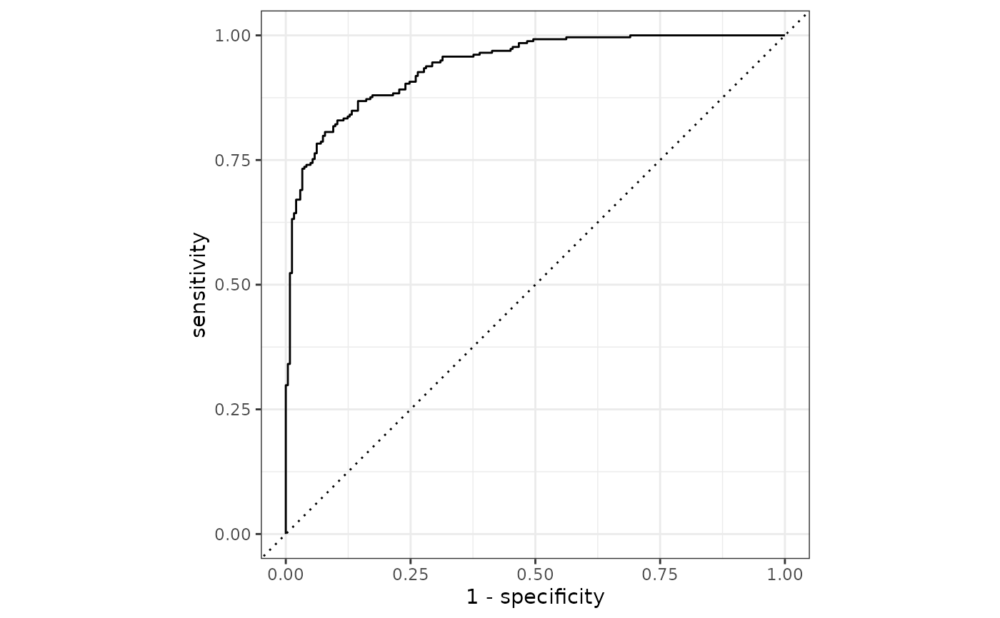

roc_curve() constructs the full ROC curve and returns a
tibble. See roc_auc() for the area under the ROC curve.
roc_curve(data, ...) # S3 method for data.frame roc_curve(data, truth, ..., options = list(), na_rm = TRUE) autoplot.roc_df(object, ...)
Arguments
| data | A |
|---|---|
| ... | A set of unquoted column names or one or more
|
| truth | The column identifier for the true class results
(that is a |
| options | A |
| na_rm | A |
| object | The |
Value
A tibble with class roc_df or roc_grouped_df having
columns specificity and sensitivity.
If an ordinary (i.e. non-smoothed) curve
is used, there is also a column for .threshold.
Details
roc_curve() computes the sensitivity at every unique
value of the probability column (in addition to infinity and
minus infinity). If a smooth ROC curve was produced, the unique
observed values of the specificity are used to create the curve
points. In either case, this may not be efficient for large data
sets.
There is a ggplot2::autoplot()
method for quickly visualizing the curve. This works for
binary and multiclass output, and also works with grouped data (i.e. from
resamples). See the examples.
Multiclass
If a multiclass truth column is provided, a one-vs-all
approach will be taken to calculate multiple curves, one per level.
In this case, there will be an additional column, .level,
identifying the "one" column in the one-vs-all calculation.
Relevant Level
There is no common convention on which factor level should
automatically be considered the "event" or "positive" result.
In yardstick, the default is to use the first level. To
change this, a global option called yardstick.event_first is
set to TRUE when the package is loaded. This can be changed
to FALSE if the last level of the factor is considered the
level of interest by running: options(yardstick.event_first = FALSE).
For multiclass extensions involving one-vs-all
comparisons (such as macro averaging), this option is ignored and
the "one" level is always the relevant result.
See also
Compute the area under the ROC curve with roc_auc().
Other curve metrics: gain_curve,
lift_curve, pr_curve
Examples
# --------------------------------------------------------------------------- # Two class example # `truth` is a 2 level factor. The first level is `"Class1"`, which is the # "event of interest" by default in yardstick. See the Relevant Level # section above. data(two_class_example) # Binary metrics using class probabilities take a factor `truth` column, # and a single class probability column containing the probabilities of # the event of interest. Here, since `"Class1"` is the first level of # `"truth"`, it is the event of interest and we pass in probabilities for it. roc_curve(two_class_example, truth, Class1)#> # A tibble: 502 x 3 #> .threshold specificity sensitivity #> <dbl> <dbl> <dbl> #> 1 -Inf 0 1 #> 2 1.79e-7 0 1 #> 3 4.50e-6 0.00413 1 #> 4 5.81e-6 0.00826 1 #> 5 5.92e-6 0.0124 1 #> 6 1.22e-5 0.0165 1 #> 7 1.40e-5 0.0207 1 #> 8 1.43e-5 0.0248 1 #> 9 2.38e-5 0.0289 1 #> 10 3.30e-5 0.0331 1 #> # … with 492 more rows# --------------------------------------------------------------------------- # `autoplot()` # Visualize the curve using ggplot2 manually library(ggplot2) library(dplyr) roc_curve(two_class_example, truth, Class1) %>% ggplot(aes(x = 1 - specificity, y = sensitivity)) + geom_path() + geom_abline(lty = 3) + coord_equal() + theme_bw()# \dontrun{ # Multiclass one-vs-all approach # One curve per level hpc_cv %>% filter(Resample == "Fold01") %>% roc_curve(obs, VF:L) %>% autoplot()# Same as above, but will all of the resamples hpc_cv %>% group_by(Resample) %>% roc_curve(obs, VF:L) %>% autoplot()# }